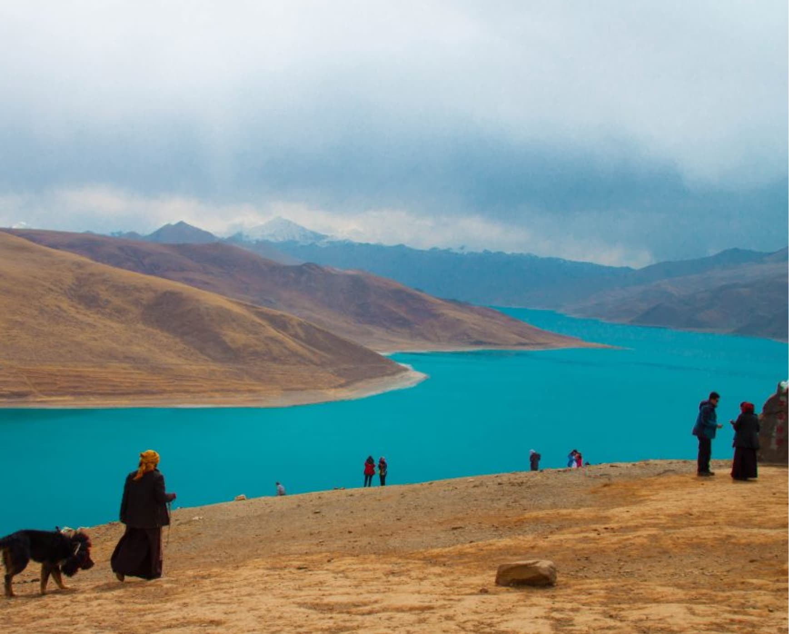
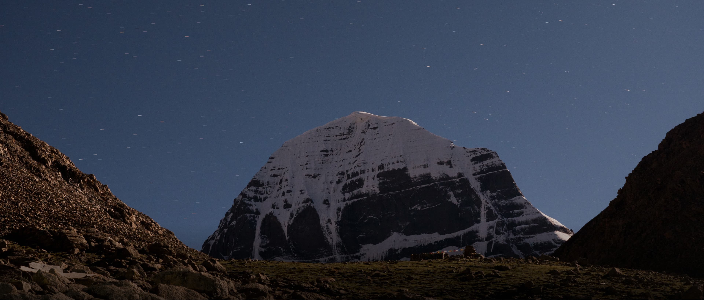
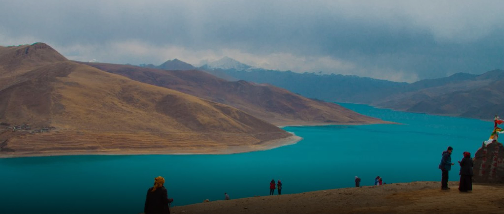
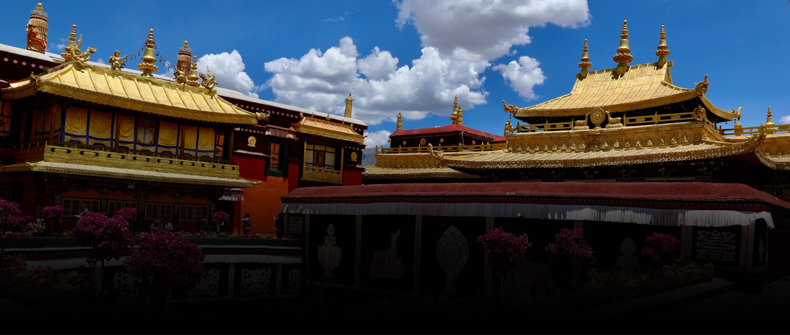
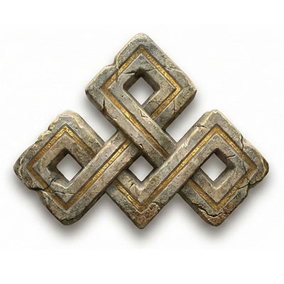
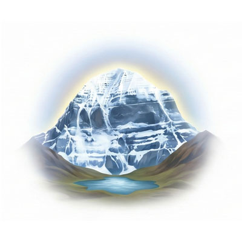

Для бронирования тура нужно внести первую предоплату в размере $500. Вторую предоплату $1000 нужно внести до 1 июля. Оставшуюся сумму в долларах необходимо взять с собой и передать гиду наличными при встрече.
Кайлаш: Сакральная Дверь
В энергиях Огненной Лошади тишина Кайлаша звучит громче всего.
Мы приглашаем вас в экспедицию за кристальной ясностью и созвучием с Вечностью.
Присоединиться к Пути
О Пути
Место кристальной чистоты сознания
Мы приглашаем вас в путешествие к глубинам познания. Это край красивейших восьмитысячников, кристальных озер и древнейших монастырей, в которых время остановилось.
В 2026 году Кайлаш активирует свой канал Вечности. Это не просто туризм - это возможность соприкоснуться с древней аутентичностью и пройти через сакральную дверь, открытую в этот особый год.
Подробнее про это путешествие можно почитать перейдя по этой ссылке


Священный Кайлаш
Сердце Мира, застывшее в камне. Это не просто гора, а совершенная мандала и ось мироздания, где небо касается земли. В год Огненной Лошади его энергия многократно усиливается, открывая портал для тех, кто готов к глубокой трансформации. Здесь, у Северного Лица, тишина звучит громче грома, а каждый шаг Коры становится ритуалом умирания старого эго и рождения новой, истинной сути. Мы идем сюда не покорять вершину, а чтобы позволить Горе покорить наше сердце.

Озеро Манасаровар
Озеро Просветлённого Сознания, живая бирюза, хранящая память Вселенной. Это женский аспект (Инь) в совершенной диаде с мужественным Кайласом. Погружение в его ледяные воды - это тантрический акт очищения, смывающий пыль кармы и растворяющий остатки неведения. Здесь, на берегу, ум успокаивается, становясь чистым зеркалом, готовым отразить высшую мудрость. Это место для интеграции опыта и обретения внутренней тишины.

Лхаса и Храм Джоканг
Энергетическое сердце Тибета и «Обитель Богов». Храм Джоканг - это точка сборки, где хранится древнейшая статуя Будды, вибрирующая силой миллионов молитв. Здесь, в лабиринтах улицы Баркор и залах древних святынь, мы вплетаем свои намерения в общий узор паломничества. Это место встречи с аутентичностью, где время останавливается, уступая место вечности. Лхаса — это первый вдох на высоте и начало нашей настройки на вибрации Крыши Мира.
Монастырь Самье
Первый буддийский монастырь Тибета, воплощенная в камне модель Вселенной. Его уникальная архитектура - это гигантская трехмерная мандала, где центральный храм символизирует гору Меру, а боковые святилища - континенты, океаны и миры. Прогулка здесь - это мистическое путешествие по структуре мироздания, помогающее выстроить внутреннюю ось. Здесь мы проводим практику построения своей внутренней мандалы, соединяясь с древнейшими линиями передачи мудрости.
Небесное Озеро Намцо
Озеро, парящее на высоте 4718 метров, словно осколок неба на земле. Это зеркало подсознания и обитель богини Чо-и-гал. Его бесконечная синева сливается с горизонтом, стирая границы между мирами. Практики созерцания («шине») на берегу Намцо позволяют заглянуть в собственную бездну, увидеть свои истинные намерения без искажений и перезапустить жизненные циклы. Это диалог с вечностью через абсолютную прозрачность воды и воздуха.
Тиртапури: Врата Очищения
Сакральные Врата Шамбалы и место силы Гуру Ринпоче. Здесь бьют священные горячие источники, в которых мы совершаем ритуальное омовение перед Корой. Тиртапури - это огонь очищения, сжигающий кармические препятствия. Проход через природные туннели в скалах символизирует процесс перерождения: мы символически умираем для прошлого, чтобы выйти обновленными, подготовив тело и дух к встрече с суровым и прекрасным величием Кайлаша.
Озеро Ямдрок-Цо
Священное «Бирюзовое озеро», хранящее жизненную силу Тибета. Его воды, меняющие цвет от глубокого индиго до нежной лазури, считаются эликсиром бессмертия. С высоты перевала Камба-Ла оно напоминает изогнутый ритуальный кинжал или серьгу богини. Это место накопления энергии, где мы наполняемся силой перед дорогой на запад. Созерцание его глади успокаивает ум и гармонизирует внутренние элементы тела.
Ступа Кумбум
Архитектурное чудо в Гьянце, «Ступа ста тысяч изображений». Это уникальный многоуровневый храм-мандала, по которому можно физически подняться вверх, проходя через уровни просветления. Каждая из множества капелл - это отдельный мир с ликами божеств, где паломник встречается с сакральным лицом к лицу. Восхождение на вершину Кумбум символизирует духовный путь: от запутанности сансары к ясному видению и открытому небу над головой.
Монастырь Ташилунпо
Величественная резиденция Панчен-ламы в Шигадзе и город золотых крыш. Здесь находится гигантская статуя Будды Майтреи - Будды Грядущего, символизирующая надежду и связь с будущим. Энергия этого места направлена на процветание и благое развитие. Мы посещаем Ташилунпо перед уходом в аскезу высокогорного плато, чтобы получить благословение на путь и заложить семена светлого будущего в свое сознание.
Найдите свой внутренний покой
Это не просто треккинг, это гигантский тренажер духа, где каждый шаг - осознанное решение стать чище и сильнее.
ПрисоединитьсяПрограмма Тура
-
День 1
Лхаса - Прибытие в Обитель Богов
Высота 3650 м. Первый вдох в «Обители Богов». Это день осознанного замедления и перестройки ритмов. Вечерняя совместная медитация-настройка: в Тибете говорят, «торопись медленно, чтобы душа успевала за телом».
-
День 2
Лхаса - Центр Вселенной
Посещение храма Джоканг - энергетического сердца Тибета, построенного на священном озере (место силы Ян). Мы совершим кору вместе с паломниками, вплетая нить своего намерения в общий узор молитвы и вращая барабаны. После обеда - выезд в монастырь Самье, первую буддийскую мандалу в камне.
-
День 3
Самье и Миндролинг
Утренняя практика построения внутренней сакральной мандалы в Самье. Переезд в монастырь Миндролинг - сердце древнейшей школы Ньингма и хранитель линий Великого Совершенства (Дзогчен). Воздух здесь насыщен многовековой садханой. Интеграция полученного опыта через глубокое молчание в дороге.
Переезд: 250 км. -
День 4
Лхаса - Озеро Намцо: Диалог с Бездной
Однодневная поездка к «Небесному озеру». Подъем на перевал Накчу-Ла (5190 м) к озеру Намцо (4718 м) - обители богини Чо-и-гал (энергия Инь). Его гладь - зеркало для ума, отражающее истинные намерения. Практика молчаливого созерцания («шине») поможет перезапустить жизненные процессы.
Переезд: 440 км. Высота: 5190 м / 4718 м. -
День 5
Дорога к Ямдрок-Цо - Озеру Жизни
Перевал Камба-Ла (4794 м) открывает вид на озеро Ямдрок-Цо, по форме напоминающее ритуальный кинжал и считающееся эликсиром жизненной силы. В Гьянце мы посетим монастырь Пелкор Чоде и уникальную ступу Кумбум («100 000 образов»). Ночлег в Шигадзе.
Переезд: 350 км. Высота: 4794 м. -
День 6
Шигадзе - Сага. Вхождение в Пустоту
Утром визит в Ташилунпо к самой большой в мире статуе Будды Грядущего - Майтреи. Далее начинается переход в измерение аскезы: дорога на запад через бескрайние степи. Первая глубокая ночь на высоте в Саге - проверка готовности к Коре.
Переезд: 240 км. Высота ночевки: 4400 м. -
День 7
Сага - Тиртапури: Огненное Очищение
Прибытие в Тиртапури, где медитировал Падмасамбхава. Кора через природные туннели и ритуальное омовение в горячих источниках. Это тантрическая практика сброса кармических грузов: вода смывает препятствия перед встречей с Кайласом.
Переезд: 330 км. Высота ночевки: 4600 м. -
День 8
Начало Коры. Путь Смирения
Короткий переезд в Дарчен и старт Коры. Тропа вдоль реки Лха-Чу к монастырю Дерапак. Это путь оставления прошлого. Впервые открывается вид на Северное Лицо Кайлаша - «Снежную жемчужину», идеальную геометрию святости. Ночь у подножия Бога.
Пеший переход: 18 км, 6-7 часов. Высота: 5000 м. -
День 9
Отдых в Дерапаке. Лицом к Лицу
День тишины и глубоких практик. Близкое соприкосновение с Северной стеной Кайлаша. Это время, когда гора говорит на языке пространства и света. Возможность для внутреннего диалога с «Сердцем Мира» и осознания момента здесь и сейчас.
-
День 10
Перевал Дролма-Ла. Смерть Эго
Самый важный и сложный день. Подъем на перевал Дролма-Ла (5630 м) - точка символической смерти старого Я. Оставляем символы прошлой жизни и рождаемся заново, спускаясь в долину Зутулпук. Алхимия внутренней трансформации достигает пика.
Пеший переход: 18 км, 7-9 часов. Перевал: 5630 м. -
День 11
Завершение Коры. Возрождение
Финальный переход «Рождение из Пустоты». В точке выхода - поклон Кайлашу и благодарность за инициацию. Переезд к озеру Манасаровар. Ночлег в лодже у озера.
Пеший переход: 10 км, 3-4 часа. Высота: 4550 м. -
День 12
Манасаровар. Озеро Просветлённого Сознания
День полного покоя и интеграции. Кайлаш (воля/Ян) и Манасаровар (мудрость/Инь) образуют совершенную диаду. Свободное время на берегу великого озера для созерцания.
-
День 13
Прощание с Горами. Монастырь Чиу
Посещение монастыря Чиу («Птичье гнездо»), парящего на скале. Финальные практики на озере, закрепление полученных энергий и глубокая благодарность пространству.
-
День 14
Манасаровар - Граница
Прощание с Великой Горой. Мы увозим тишину и свет Кайлаша внутри себя. Длительный переезд к границе (район Кодари/Пуранг). Ночлег у границы.
Время в пути: 6-8 часов. -
День 15
Граница - Катманду
Переход границы и физический спуск в субтропики Непала. Резкая смена флоры и энергий. Переезд в Катманду - оглушительный контраст звуков и красок после тишины плато. Ночевка в Катманду.
Граница (4ч) + Катманду (4ч). -
День 16
Катманду. Завершение мандалы
Свободный день. Возможность посетить ступу Боданатх и в тишине сердца «поместить» весь полученный опыт в центр этой мандалы. Вылет домой или продолжение программы в Непале.

Вас ждет в этом путешествии

Древние тайны
Вы увидите забытые временем городища и древние пирамиды, хранящие память тысячелетий.

Сила Природы
Святые горячие источники, дарующие восстановление, и чистейший воздух «Крыши Мира».
Духовные Практики
Специальные практики для сонастройки с местами силы, помогающие войти в состояние ясности ума.
Опытные Проводники
Полное погружение в традиции с гидами, которые знают ключи к этим сакральным дверям.
Ваш Проводник
Екатерина
Автор путешествий «Созвучие»Природа - это живой храм, а треккинг - инструмент для очищения ума, взращивания духа и раскрытия сердца. Катя организует эти путешествия, чтобы поделиться опытом глубокой сонастройки с пространством. Она создает атмосферу доверия и простоты, помогая участникам увидеть за физической красотой гор сакральные двери к самим себе. Это путь для тех, кто ищет не просто впечатлений, а ясности и обновления энергии.
Отзывы участников
Истории трансформации и впечатления о пути
-
Стоимость участия
Стоимость: $2800*
*цена актуальна при раннем бронировании до 1 марта
Порядок оплаты:
1. Предоплата $500 для бронирования места.
2. Второй платеж $1000 до 1 июля.
3. Оставшуюся сумму в долларах передаете гиду при встрече.ВКЛЮЧЕНО:
- Оформление всех пермитов (Тибет, пограничные пропуска)
- Встреча в аэропорту Лхасы и трансфер в отель
- Ежедневное сопровождение тибетским англоязычным гидом
- Ежедневное сопровождение русского гида-переводчика
- Все групповые перемещения (комфортабельный автобус)
- Проживание (отели/гестхаусы, 2-мест.)
- Завтраки
- Входные билеты (монастыри, нацпарки)
- Трансфер до границы с Непалом (для выезжающих)
- Трансфер в аэропорт (для завершающих в Лхасе)
- Трансфер из Кирунга до Катманду
- Туристическая страховка, кислород и вода
НЕ ВКЛЮЧЕНО:
- Международные авиабилеты в/из Лхасы
- Обеды и ужины ($15–20/день)
- Портеры/яки/лошади на Коре (по желанию)
- Объезд вокруг оз. Манасаровар на автобусе
- Купание в горячих источниках (монастырь Чиу)
- Чаевые гидам и водителю
- Виза в Непал ($30-50, на границе)
- Китайская виза (если требуется)
ДЕНЬГИ И ВАЛЮТА
Валюта: В Тибете принимаются только наличные китайские юани (CNY). Доллары нужно поменять заранее или в Лхасе.
Карты: UnionPay работает в банкоматах крупных городов (Лхаса). На остальном маршруте, особенно на Коре, расчет только наличными.
-
Визы и Документы
ВИЗА В КИТАЙ
Для граждан РФ: Виза не нужна (въезд по групповым спискам).
Для граждан Европы и США: Требуется стандартная туристическая китайская виза (тип L).ПЕРМИТЫ
Мы полностью берем на себя оформление Тибетского пермита (Tibet Travel Permit) и всех пограничных пропусков после подтверждения тура.
ПАСПОРТ
Срок действия загранпаспорта должен быть не менее 6 месяцев на момент окончания поездки.
Частые вопросы
Здесь вы найдете ответы на самые популярные вопросы